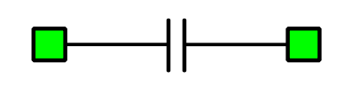
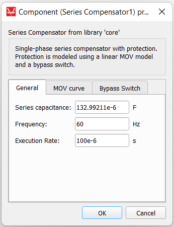
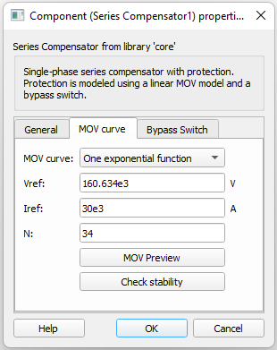
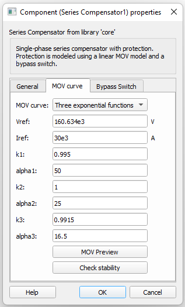
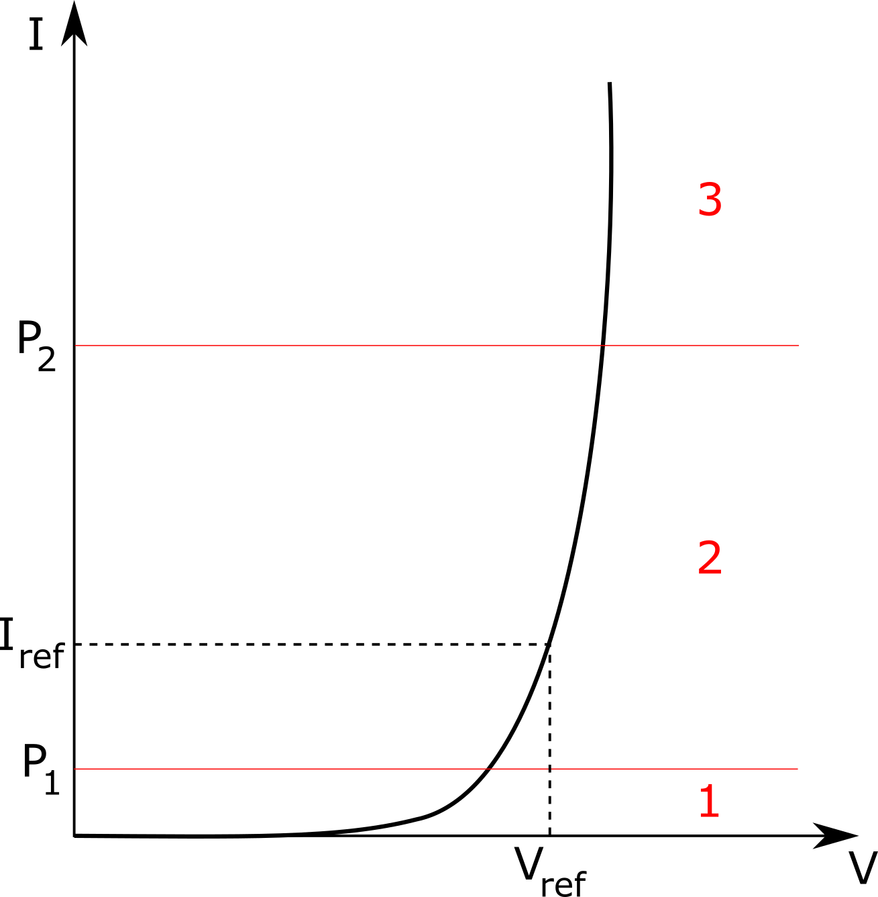
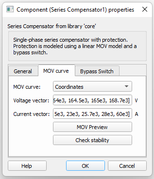
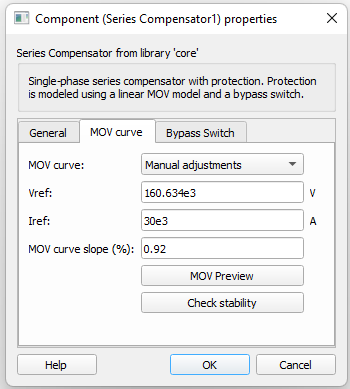
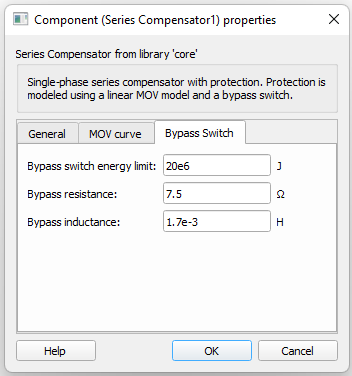

Series Compensator
Description of the Series Compensator component, for compensating physical inductance of transmission lines.
The Series Compensator component, shown in Table 1, is a Schematic Editor library block from the FACTS sub-category of the Microgrid core library category. It is a three-phase component that can be used to compensate the physical inductance of transmission lines, thus reducing voltage drop across it. The component model is composed of a capacitor and a Metal Oxide Varistor (MOV) per phase.
| component | component dialog window | component parameters |
|---|---|---|
 Series Compensator |
 |
|
Series Compensator schematic block diagram
The component consists of a capacitor (C) in parallel with a MOV model and a bypass switch (S), as shown in Figure 1. The MOV is modelled as an association of a diode-leg, voltage sources, and a resistor. An energy counter block computes the energy that flows through the MOV and sends a signal to close the bypass switch when the defined limit is reached (on the Bypass Switch tab).
Component dialogue box and parameters
The Series Compensator component dialogue box consists of three tabs for specifying parameters of the component.
Tab: General
In this component tab, general parameters of the Series Compensator can be specified.
| Parameter | Code name | Description |
|---|---|---|
| Series capacitance | C | Value of the capacitance used in the line compensation. [F] |
| Frequency | fc_sc | Frequency of the system. [Hz] |
| Execution Rate | execution_rate | Execution rate of the inner signal processing components. [s] |
Tab: MOV curve
In this component tab, different MOV curves can be specified. Currently, four types of data inputs are available: One exponential function, Three exponential functions, Manual adjustments, and Coordinates. The MOV preview and Check stability buttons are present are present in all options, and allow you to see the MOV curve from the data entries and to check if the simulation has become numerically unstable. The simulation is run considering the Typhoon HIL linear representation of the curve obtained from the input data and can be seen through the MOV preview button.

| Parameter | Code name | Description |
|---|---|---|
| Vref | vp | Voltage threshold defined for MOV conduction. [V] |
| Iref | Iref | Current that flows through the MOV when its voltage level achieves Vref. [A] |
| N | n_exp | Exponent value of the function that determines the MOV curve. This parameter can be changed in order to adjust the curve as desired. |
The Series Compensator model "MOV curve – One exponential function" is as follows:

| Parameter | Code name | Description |
|---|---|---|
| Vref | vp | Voltage threshold defined for MOV conduction. [V] |
| Iref | Iref | Current that flows through the MOV when its voltage level achieves Vref. [A] |
| N | n_exp | Exponent value of the function that determines the MOV curve. This parameter can be changed in order to adjust the curve as desired. |
The Series Compensator model "MOV curve – Three exponential function" is as follows:

The transition points from one segment to the other are determined by:
here:

| Parameter | Code name | Description |
|---|---|---|
| Voltage vector | v_vector | Vector of voltage values of the MOV curve. [V] |
| Current vector | i_vector | Vector of current values associated to the values of the voltage vector. [A] |

| Parameter | Code name | Description |
|---|---|---|
| Vref | vp | MOV curve slope [V] |
| Iref | Iref | Current that flows through the MOV when its voltage level achieves Vref. [A] |
| MOV curve slope | mov_slope | Percentage slope of the curve where 0 means 0º of inclination and 1 means 89.9999º of inclination, with the angle reference in the break node of the line. |
Tab: Bypass switch
The bypass switch is used to protect the MOV from exceeding its thermal rating in case of excessive energy absorption.

| Parameter | Code name | Description |
|---|---|---|
| Bypass switch energy limit | bypass_energy | Energy threshold defined for the switch closure. [J] |
| Bypass resistance | bypass_R | Resistance of the bypass branch. [Ω] |
| Bypass inductance | bypass_L | Inductance of the bypass branch. [H] |
Component Limitations
Numerical instability can occur for some simulation conditions when using this component. The model characteristics can lead the simulation to numerical instability associated with the charging/discharging process of the capacitor due to time step limitations. If the charging/discharging process is substantially fast to the point where information can be lost between time step calculation, the simulation can become unstable. We strongly recommend keeping the relation Tau/simulation_time_step > 2, where Tau is the time constant RC of the component. Stability analysis can be checked by clicking the Check stability button after entering the desired parameters. Evaluation of the stability conditions is also done when compiling the model.
Example model
Overall behavior and control methodologies can be better understood with the use of the given example:
Model name: series compensator example.tse
SCADA interface: series compensator example.cus
Path: examples/models/microgrid/FACTS/series compensator example